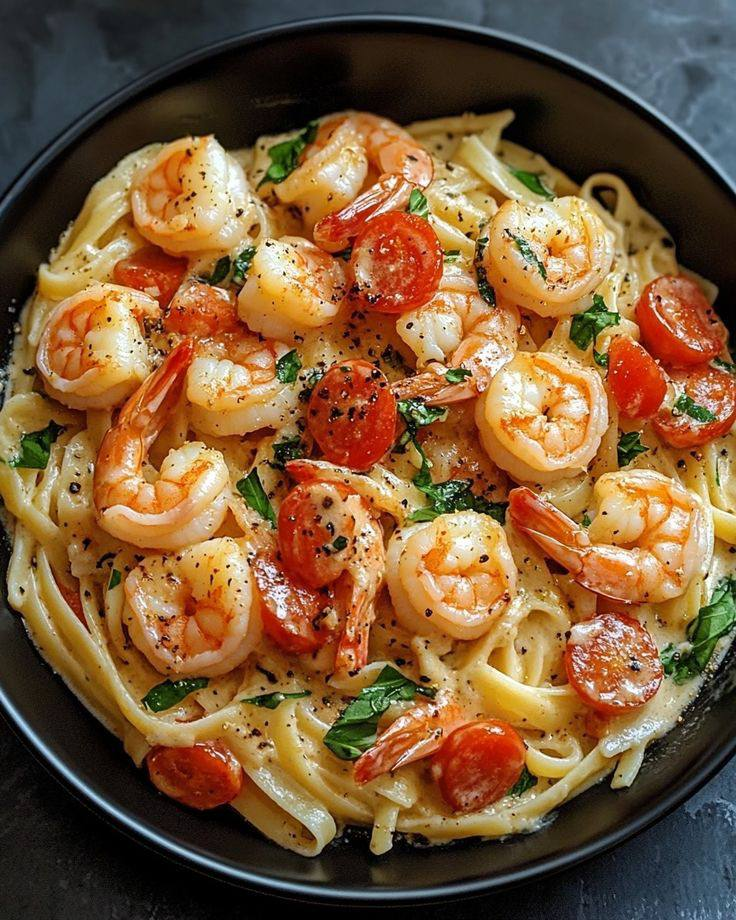

Home
Shrimp Pasta

Shrimp pasta is a quick, flavorful dish combining tender shrimp, al dente pasta, garlic, and a creamy or buttery sauce.
It's perfect for weeknight dinners or special occasions because it feels fancy but is easy to make!
Inredients
- 8 oz spaghetti, fettuccine, or linguine
- 1/2 pound medium or large shrimp, peeled & deveined
- 2 cloves garlic, minced
- 2 tablesppons olive oil or butter
- 1/2 teaspoon salt
- 1/4 teaspoon black pepper
- 1/4 teaspoon red pepper flackes (optional )
- juice of 1/2 lemone
- 1/2 cup heavy cream
- 1/4 cup parmesan cheese, grated
- 1/2 cup pasta water (reserved from boilimg)
- 1 tablespoon chopped parsley (optional)
Instructions
- Cook the pasta boil pasta in salted water until al dente. resever 1/2 cup pasta water.
Drain and set aside
- heat oil or butter in a large skillet. Add garlic and cook for 30 seconds.
- Add shrimp, chili flakes, salt and pepper. cook for 2-3 minute on each side until pink and
opaue. Remove shrimp and set aside.
- Pour heavy cream into the skillet and add parmesan. stir in a little reserved pasta water
until smooth
- Add the pasta back into the sauce. Combine well
- Add shrimp back in and squeeze lemone juice over it.
- Serve immediatley with chopped parsley on top if you wish.
Variatons
- Add veggiese like dicad tomatoes or spinach
- Substitute tomato sauce instead of cream
- Make it lighter by using olive oil and lemon juice